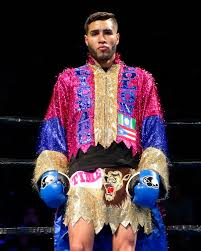

Prichard Colon Dies at 33 After Decade-Long Battle From Devastating Boxing Injury
Sports | Boxing
Published: Wednesday, August 13, 2026

Former professional boxer Prichard Colon has died at the age of 33, more than a decade after a devastating brain injury suffered during a 2015 bout left him with permanent neurological damage.
Colon’s father, Richard, announced his son’s death on social media Thursday, asking supporters who had followed the boxer’s journey to continue keeping the family in their prayers.
“Good morning, my people,” Richard Colon wrote, announcing that his son had passed away. He also reflected on his efforts to fulfill Prichard’s dream of visiting Puerto Rico.
A Promising Prospect
Before the tragedy, Colon was considered one of boxing’s promising young prospects. The Puerto Rican entered his October 2015 fight against Terrel Williams with an undefeated 16-0 professional record, including 13 victories by knockout.
The bout, held in Fairfax, Virginia, became the defining moment of Colon’s life.
The 2015 Fight
During the fight, Colon was repeatedly struck by punches to the back of the head, which are prohibited under boxing rules. Colon complained about the blows, but the fight continued. He was also penalized two points for a low blow.
In the ninth round, Colon was knocked down. Confusion followed when members of his corner removed his gloves, apparently believing the fight had ended. The referee instead disqualified Colon.
Life-Altering Aftermath
The situation quickly became far more serious.
Colon needed assistance reaching the locker room and later began vomiting before collapsing. He was rushed to a hospital, where doctors diagnosed him with a subdural hematoma, a dangerous accumulation of blood around the brain.
Doctors performed emergency surgery to relieve pressure and address the bleeding. Colon subsequently remained in a coma for 221 days.
When he eventually regained consciousness, the damage had left him unable to live independently. He remained in a vegetative state and required extensive care from his family. He also relied on computer-assisted technology to communicate.
Career and Legacy
Colon’s boxing career had once appeared to be headed in a very different direction.
As an amateur, he won national titles at 141 and 152 pounds and competed in the qualification process for the 2012 London Olympics. After failing to advance, he turned professional in 2013.
He quickly built an impressive résumé, winning his first 16 professional fights and establishing himself as a fighter to watch. His loss to Williams was the only defeat of his professional career.
For more than a decade, Colon’s family cared for him following the injury, while supporters around the boxing world continued to follow his story.
His death at 33 marks the end of a life and career that had been dramatically altered by one night inside the boxing ring.